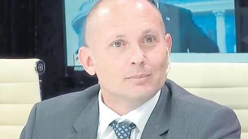

Real Chubut - Agencia de Noticias


Audios, fotos y reuniones del fiscal y el abogado

Las pruebas aportadas en la causa documentan dos reuniones en Pinamar entre Carlos Stornelli y Marcelo D’Alessio. Otro audio y una captura de Whatsapp revelan que supuestamente el fiscal le pidió al abogado pastillas para “plantar” en un operativo.
La investigación de la extorsión a la que fue sometido el empresario Pedro Etchebest suma más y más elementos que parecen vincular a Carlos Stornelli con el operador Marcelo D’Alessio. El fiscal aduce que conoce desde hace poco a D’Alessio y que la relación es más bien lejana. Sin embargo, se reunió tres horas con él en un balneario de Pinamar el 7 de enero pasado. El encuentro se coronó con un paseo de ambos en la camioneta del operador. Un audio de D’Alessio –al que tuvo acceso exclusivo PáginaI12– da cuenta de una segunda reunión en Pinamar, el 20 de enero, algo que seguramente debe motivar más medidas de prueba del juez que investiga la maniobra, Alejo Ramos Padilla. Y no menos curioso es otro audio y una captura de Whatsapp, enviado por D’Alessio, en el que supuestamente el fiscal le pide pastillas para “plantar” en un operativo anti-drogas. Si no existiera la relación, tampoco se entendería el gravísimo pedido del fiscal a D’Alessio para que le haga una cámara oculta a un abogado, José Manuel Ubeira, que defiende a uno de los imputados en la causa de las fotocopias de los cuadernos (ver aparte). Todas esas evidencias por lo menos ameritan una mirada sobre el vínculo D’Alessio-Stornelli. No menos asombroso es que transcurridos cinco días de la denuncia por el pedido de coima, Stornelli no haya presentado a su vez denuncia contra D’Alessio si, como dice, no tiene vínculos con él y el operador pidió 300 mil dólares en su nombre.
- Coima. Stornelli arrancó defendiéndose de distintas maneras, pero fundamentalmente diciendo que era una “operación” política porque él está avanzando mucho en el expediente de las fotocopias. Aún así, el mismo viernes debió presentar la denuncia contra su operador porque D’Alessio admitió que le pidió dinero al empresario Etchebest con el burdo argumento de que fue “para saber de dónde saca la plata”. Es decir que alguien con quien tuvo trato reconoció que extorsionó y Stornelli no movió un dedo.
A eso hay que agregar que, también desde el viernes, están las pruebas de dos pagos de Etchebest a D’Alessio, por 9700 dólares y 5 mil dólares. El primero en el hotel Alvear Icon de Puerto Madero y el segundo en la confitería Selquet.
Sin embargo, Stornelli ni denunció a D’Alessio ni entregó su celular para peritar.
- Lejanía. Ante el escándalo, Stornelli también reaccionó contradiciéndose en forma permanente durante el viernes. Por la mañana dijo que sólo lo había visto dos veces a D’Alessio mientras que a la noche, en TN, admitió que lo conocía desde hacía tres o cuatro meses y que le trajo a un denunciante. Por supuesto, se dio cuenta de que en la denuncia había bastantes pruebas y tuvo que rectificar el rumbo de forma urgente.
Las respuestas no resisten el menor análisis. Hay decenas de intercambios de Whatsapp, audios y están las imágenes del encuentro del 7 de enero en Pinamar, incluyendo el paseo posterior en la Range Rover de D’Alessio.
Otro de los videos que constan en la causa es de D’Alessio dentro de la fiscalía de Stornelli, asistiendo a la declaración del arrepentido de Pdvsa, Gonzalo Brusa Duvat. D’Alessio no tiene la matrícula vigente, de manera que estaba allí de manera irregular: nadie puede estar durante la declaración de un testigo–arrepentido y menos todavía si ni siquiera tiene matrícula.
Ni bien concluyó la declaración, a D’Alessio le entregaron una copia que, de inmediato, le envió por Whatsapp a un periodista y también al empresario extorsionado. Era su forma de mostrar que trabajaba para Stornelli.
- Pinamar II. La casi totalidad de las pruebas que se conocen fueron aportadas por Etchebest. En uno de los audios, D’Alessio habla con el empresario y le cuenta que estuvo otra vez con Stornelli en Pinamar el 20 de enero.
D’Alessio: ¿Hola?
Etchebest: Hola Marcelo!
D: Saliendo en este momento siendo las 20 y 33 minutos de un hermoso día de playa familiar.
E: ¿Recién salís?
D: Estoy saliendo de este momento de la playa
E: ¿Uhh de las 6 de la mañana que te fuiste?
D: Sí... Me presentó a unos familiares, había... se acercó otro fiscal que se llama Rivolo que es el que le está cubriendo el culo que había pasado el fin de semana ahí... bah no importa... ehh... la verdad un día de sumar de todo bien... Estaba re caliente... le bajé 10 decibeles y nada mañana te cuento personalmente olvídate...
D’Alessio le resumió a Etchebest que Stornelli estaba muy enojado porque todavía el empresario no había pagado los 300 mil 000 dólares comprometidos y que el fiscal iba a usar –supuestamente– en la compra de una casa al empresario Héctor Collela. Al no hacerse la escritura había una penalidad de 9.700. En el extenso audio, D’Alessio arregla con Etchebest que éste pague los 9700 dólares, lo que se concreta en el hotel Alvear Icon de Puerto Madero. A la Justicia se le entregaron las pruebas de ese pago y el juez Ramos Padilla pidió el secuestro de las cámaras de la confitería del hotel.
Será una buena prueba ver también las cámaras del balneario CR sobre los dos encuentros entre Stornelli y D’Alessio, el primero de ellos con la presencia de Etchebest.
- Extorsión. En un estudio de los antecedentes del caso, D’Alessio ya había sido acusado de extorsión por un importador, Gabriel Traficante, imputado por unos permisos de importación. La causa es de 2016 y D’Alessio supuestamente pidió dinero para ayudar a Traficante en la causa judicial y vendiendo también su influencia en el periodismo.
El expediente recayó en el juez Luis Rodríguez y el fiscal fue Eduardo Taiano. El abogado de D’Alessio en este expediente es presentado como su socio, pero Rodrigo González afirma que no es socio, sino que es su cliente. Aún así, el letrado aparece vinculado por D’Alessio en la cámara oculta a un abogado y hay dos imputados en el caso de los cuadernos que tienen un audio en que se ofrece a D’Alessio y González para arreglar su situación con el fiscal.
Habrá que ver las pruebas –principalmente un audio– de lo que constituiría otra tentativa de extorsión, con el mismo modus operandi.
- Audios. En su afán por convencer a Etchebest de su poder sobre Stornelli, el operador le envió al empresario otro curioso cruce de una foto, dos audios y una captura de whatsapp.
Lo primero en la secuencia es la foto: un vaso con pastillas. Va acompañado de un texto que D’Alessio le manda a Etchebest: “Viste. Nada es lo que parece. Y viste que piden falopa para plantar. Son muy bravos estos nenes”. El significado del párrafo es que el fiscal le pidió pastillas para sembrarlas como prueba en un procedimiento anti-drogas.
Lo siguiente es un mensaje de audio de Whatsapp, supuestamente de D’Alessio a Stornelli: “Dr. Está grande para las meta-anfetaminas, extasis, dejémonos de joder. Que se yo. Yo te mando, pero me da pudor. Un abrazo Carlitos”. El audio continúa respecto de una mujer que no quiere declarar en la fiscalía, pero está dispuesta a una reunión confidencial. La respuesta, también de audio de Whatsapp, es de una voz que se parece mucho a la de Stornelli: “Ok, un abrazo”.
Esta combinación de foto y audios puede ser un armado de D’Alessio, pero no debería ser difícil de investigar: de todas maneras, el celular de recepción que aparece es el que corresponde al fiscal Stornelli.
- Causa. Desde el momento del surgimiento del expediente de las fotocopias de los cuadernos fueron evidentes las manipulaciones:
- Nunca aparecieron los originales de los cuadernos de Centeno. La letra y el tono de lo escrito es muy distinto hasta 2008 y después de 2008, pero la ausencia de los originales impide una pericia. El chofer Oscar Centeno admite su autoría, pero es un reconocimiento poco válido, obtenido bajo pena de ir a la cárcel.
- El fiscal Stornelli recurrió a una maniobra grotesca para quedarse con el expediente sosteniendo que se correspondía con la causa de la compra del Gas Natural Licuado. En ese expediente, tuvo protagonismo D’Alessio desde el principio, diciendo que como funcionario de Enarsa conocía al detalle lo que ocurrió. La denuncia se basó en una pericia fraudulenta de un ingeniero llamado David Cohen, pero aún así les sirvió para quedarse –de manera burda– con la causa de las fotocopias.
- Desde el primer día hay versiones de un tratamiento diferenciado a determinados empresarios. Según D’Alessio –está en los audios–, a algunos se les cobró para que zafen. Con ese argumento es que le pidió el dinero a Etchebest.
- La inexistencia de registro en video de lo declarado por los arrepentidos hace imposible controlar sus dichos. De manera que cualquiera puede quedar ensuciado, sin que se pueda saber si es verdad o no que el arrepentido lo mencionó. Esto deja un enorme campo para las extorsiones.
Y lo real es que a Etchebest le pidieron 300 mil dólares, que pagó casi 15 mil y que documentó cada uno de los movimientos.
El supuesto operador de Stornelli pasó en horas de ser una estrella a una especie de leproso. Asistente a programas de televisión, columnista de Clarín, supuesto jefe de la DEA, proveedor de testigos y arrepentidos, ahora se convirtió en un repudiado por Patricia Bullrich y un casi desconocido de Stornelli. Claro que un desconocido al que no quiso denunciar, pese a que pidió fortunas nombrando al fiscal.
Fuente: Pagina 12